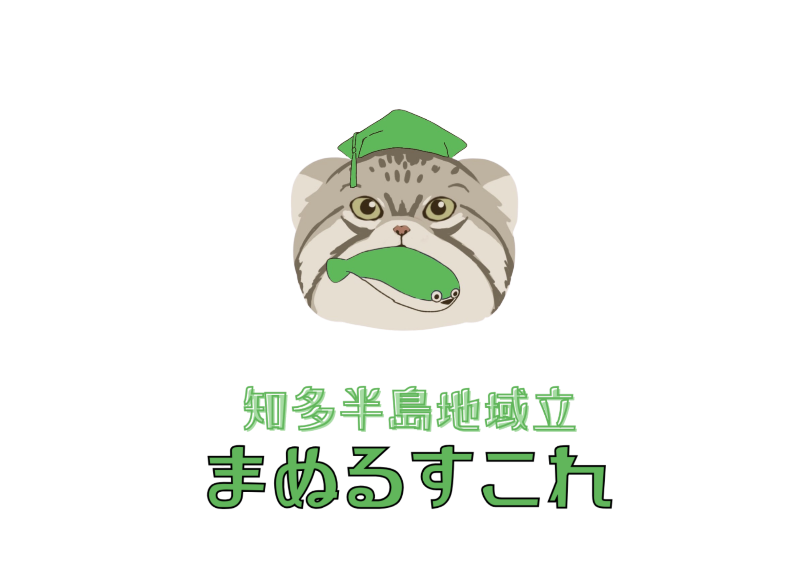

わたしたちは、不登校・発達障害・引きこもり・貧困・ジェンダーマイノリティなど、多様な背景を持つ当事者が主体となって活動しています。当事者に本当に必要なのは、一方的な「支援」だけではありません。他者に信頼され、応援され、自ら挑戦し、成長する機会です。
kimyo-na-manulは、そんな「成長の機会と貢献感が得られる居場所」を市民・企業・行政・各種団体と共につくります。ひとりひとりが活躍できる社会の実現を目指して。
「奇妙さ」は、欠如ではない。
自分の力で幸せに生きていく、その出発点だ。
KIMYO-NA-MANUL — OUR BELIEF
kimyo-na-manulは、複数の事業を通じて、子ども・若者・保護者を支えます。

2026年4月7日、大府市中央町に開校。小中高一貫、週5日開講中。LBL（ライフデザイン・ベースド・ラーニング）で子どもの個性と主体性を育みます。各学年定員4名。
詳しく見る →子育て相談は24時間365日、LINE・オンライン・対面で受付中。オンライン交流会（月2回、Discord）や対面イベント（月2回以上）も開催しています。
毎週土曜18時半配信のラジオ「まぬらじ！」と、YouTubeチャンネル「マヌルちゃんねる（仮）」で不登校・発達障害の当事者経験や子育て情報を発信しています。
「違う」「変わっている」を欠如ではなく個性として肯定します。すべての子どもの存在が、そのままで価値を持っています。
学びの内容・方法・ペースを自ら決める機会を保障します。自分が決める実感が、人生を豊かにします。
子ども・保護者・スタッフ・地域が一緒に育ち合う。誰かが誰かを一方的に「教える」だけでない関係性を大切にします。
知多半島の人・自然・文化を活かし、地域と共に育つ教育エコシステムをつくります。
まぬるすこれの運営は、地域と社会の支えによって成り立っています。ご支援いただいた資金は、子どもたちの学びの場づくりに直接使われます。
寄付をする（Congrant）kimyo-na-manulのコミュニティラジオ。日々の活動や考えを発信しています。
思い立ったら即行動！でもちゃんと本気。こんな人に流されるのは楽しいですよ。一緒に学校作ってみませんか？
― 常務理事 堀金結（クラファンページより）